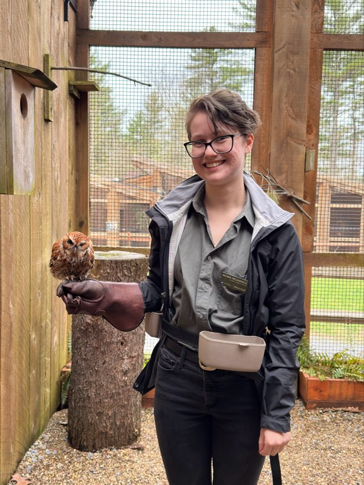
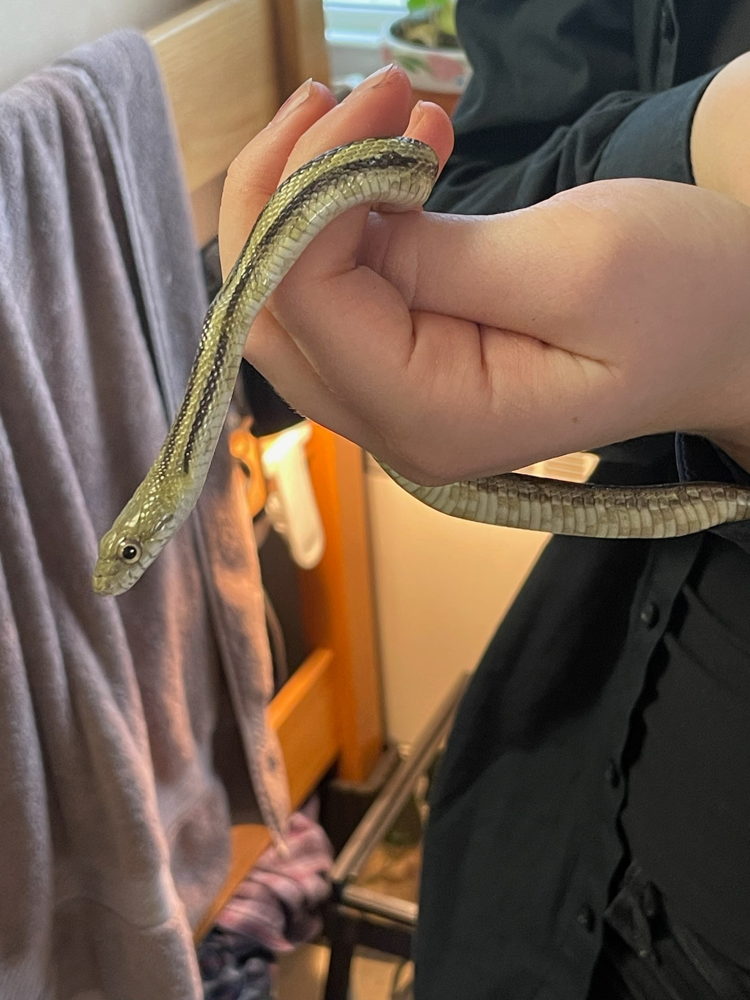
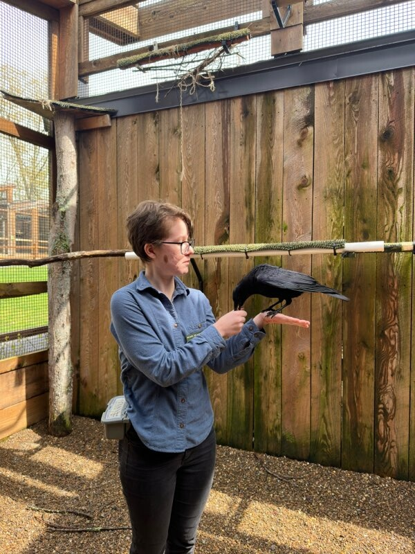

Animal behavior specialist passionate about animal welfare and experinced with non-aversive training methods and a variety of species
Growing up with rescue dogs, I spent much of my early years working with and training my two German Shepard Dogs both of whom had reactivity issues. My family's first dog, Guiness, was very fearful of people and our secong, Harley, is reactive with other dogs. Both dogs presented their own unique challenges, but made great progress with my training. Since then I have worked with a variety of bird species, from crows and vultures to a number of different hawks and owl, working on cooperative care training, glove work, and displaying natural behaviors for audiences. I have also worked with a variety of reptiles, primarily, turtles and non-venomous snakes, but also some venomous snakes on cooperative care, target training, and low stress handling.
My current areas of interest for research are animal behavior and cognition, I especially want to focus on birds of prey. I feel a better understanding of the cognative abilities of species will help us better handle their unique welfare concerns in captivity. As I continue to study Wildlife Conservation at Juniata College I hope to expand my knowledge base in animal behavior and gain experience working with a variety of species.
In terms of programing, I hope to use what I learn in this class to help me create websites that I can use to share information about species I love.
|  | |
|
|---|---|---|
| Rufous the Eastern Screech Owl during glove training. | Moth begining his harness and leash training. | Achillea a Great Horned Owl who went from no human interaction to accepting food in 2 months. |
|
 |  |
| Harley my German Shepard, at age 3, getting exercise and enrichment with toy games. | Claudia my greenish rat snake being handled as a juvenile. | Lenny the American Crow stopping to eat during training. |